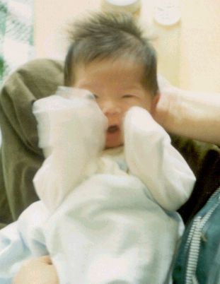

서연이 홈페이지
오늘은 서연이가 태어난지 일째 되는 날입니다.

권투 포~즈! (5월14일)
두 손과 발을 '바당당당당'. 어찌나 빠른지 ^^
아빠와 엄마의 삶에 큰 변화와 행복을 가져온 정서연입니다.
2001년 4월 27일 새벽, 분당 본산부인과에서 아빠와 함께 태어났어요. 40주동안 엄마와 이어져 있던 탯줄을 아빠가 소중히 잘라 주셨어요. 그 날은 엄마, 아빠 결혼식 때처럼 햇살이 맑았대요. ^^
'서연'이란 제 이름은 할아버지, 아빠, 그리고 아빠 회사분들이 모두 함께 지어주셨대요. 아빠는 함께 살아가는 사람들을 위해 밝고 좋은 마음을 가지고(상서로울 서,瑞), 꾸밈없이 자연스럽게 있는 그대로의 표현하는(그러할 연,然) 사람이 되라고 하세요.
집에서는 '또또'라고
불러요. 엄마는
아기에게 "또또또또또~" 소리를 즐겨 하시는데
그게 제 별칭이 되었어요.
(들어보세요 )
)
5월 26일까지는 젖병을 좋아했는데, 26일 밤 돌연 엄마가 젖만 물리시더니 이젠 젖병이 뭔지도 몰라요 ^^ 하지만 엄마 젖 물고 자는 게 너무나 좋아서 엄마가 많이 쉬지를 못하세요.
태어난 날 부터 아빠가 사진을 많이 찍어주셨어요. 아마도 제가 첫아기 라서 사진을 많이 찍으시나 봐요. 아빠가 '로모'라는 조그만 카메라로 담아 주셨어요.

ttotto의 2001년
앨범
울산앨범(외삼촌이
올려준 사진들)
제게 하시고 싶은 얘기는 이곳 방명록에 올려주세요. 아빠와 엄마가 여기에 제 '육아일기'도 함께 쓰고 있어요.
방명록/육아일기
정수진
 강하람
강하람  구본찬
구본찬 
Last updated: 2001년 9월 9일
©2001 정승훈 & 유경민 가족. All rights reserved.
www.slow.co.kr